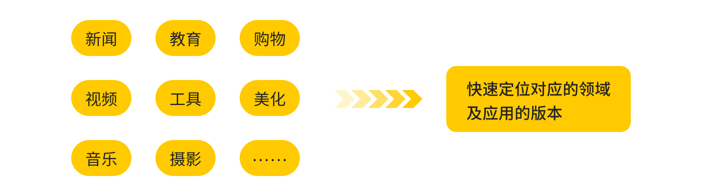
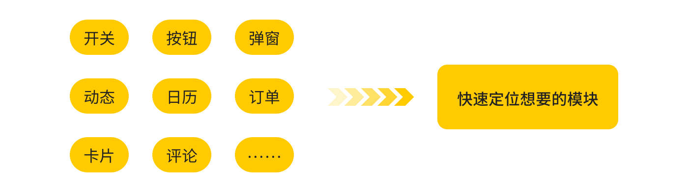
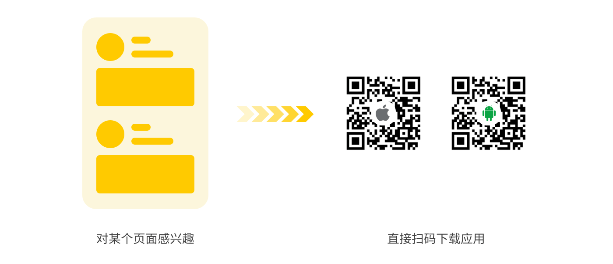

BestUI - 真实项目的 UI 灵感

简介
实践是检验真理的唯一标准，这句话同样可以用在 UI 设计上。比起从毫无逻辑和商业价值的飞机稿上寻找灵感，拆分优秀的实际项目更能对自己的设计工作产生重大的帮助。原因在于实际项目中的 UI 设计，是经过商业、产品、设计和开发等多方面碰撞和妥协的产物，参考价值显而易见，但如今并没有一个专门的产品对市面上的优秀产品 UI 进行收集和整理。没有人做的这件事，正是 BestUI 所要做的事。
BestUI 旨在帮助 UI 设计师、交互设计师、产品经理等互联网移动端从业者，发现优秀的项目，从中汲取视觉、交互和商业上的灵感。
负责范围和项目时间
- 交互设计
- UI 设计
- Logo 设计
- 2019.19 ~ 2019.10
问题一：为什么现有的网站 UI 灵感方面做得还不够好？
1、Dribbble 和 Behance 遍地的飞机稿和插画
Dribbble 和 Behance 这两个网站在很多小伙伴入行之时便耳濡目染了，随着对 UI 的接触越来越多，也会通过这两个网站了解一个新名词「飞机稿」。顾名思义，飞机稿是不考虑实际场景，纯粹炫技或者为了好看而好看的设计作品。
一旦被飞机稿迷惑了双眼，会在入门阶段对行业真实的样子产生误解。况且现在 Dribbble 上的设计师越来越多，大量设计师为了吸引眼球开始产出越来越多的插画，界面的内容越来越少，这种舍本逐末的做法只会让网站上可用的灵感越来越少。
2、Pinterest 和花瓣网的大杂烩
Pinterest 上的大多 UI 灵感来源于上述的 Dribbble 和 Behance，因而飞机稿的现象依然很严重，并且这些界面的语言基本上全是英文，参考价值会打折扣。
单就 UI 这方面来说，花瓣网比 Pinterest 要好上不少，但如果按关键词来搜索的话，结果往往来来回回就那么多。热心的收集者也是来自不同行业，很多也是随缘收集，无法满足搜索者细分的需求。
3、过时的 UI 素材包
在很多设计素材网站上会有提供诸如「40G UI 界面素材下载」、「1000G 优秀 APP 页面免费下载」等的打包下载，但很多内容早已跟不上时代，无论风格还是使用场景，都无法满足实际应用。更可况要从这 1000G 的内容中找到想要的页面，谈何容易？
4、Pttrns 和 Mobbin 的水土不服
有些专注于 UI 灵感的网站，比如 Pttrns、Mobbin等，虽然是实际的项目 UI，并且对场景进行了较为细致的分类，但界面全是英文，应用场景和界面风格也带有国外的特色，很难套用到国内的应用中。
5、手动整理费时费力
手动截图 → 上传电脑 → 按规则整理，这样的步骤坚持下来的人往往很少。最常见的做法是，遇到某个需求后，依稀记得某个应用里有类似的场景，然后去手机上打开各个应用去翻看，浪费了很多时间。
问题二：为什么 BestUI 可以满足 UI 设计师 99.9% 的灵感需求？
基于以上网站的种种不足，跟我有相似困境的设计师大有人在，希望有一个较为完整收集实际项目优秀 UI 设计的网站。几经寻找只有国外的 Mobbin.design 有这样的网站基本上符合我的设想，很可惜由于是国外的网站，收集的只有英文界面，很难适应国内的场景。
既然不能伸手，那只能自给自足了。我对这个理想网站即 BestUI 的设想分为以下三个方面。
场景一：快速定位应用领域和应用版本
设计师最常借鉴的是竞品，即所处领域的其他应用，因此快速定位到某个领域是很重要的一个诉求。
除此之外，本人经常会遇到想参考一下某个产品的某个页面，但它这个页面突然改版了，退回版本也不知道要退回哪个，只能去寻找其他的灵感。因此，另一个诉求是定位到应用的某个版本，查看这个版本下的界面。这个功能也能满足产品经理和交互设计师对竞品改版的商业和交互分析。
场景二：快速定位到功能模块
除了设计新产品，大部分设计师的设计任务更多的是设计某个功能或模块。在这种场景下，设计师需要通过关键词快速定位，比如个人中心、卡片、导航栏、弹窗等等，对比多个产品的相同模块寻找灵感。
场景三：获取随机灵感
在私下积累灵感的过程中，有种很好的方式是抛开诸多限制，浏览随机出现的灵感，让这些随机灵感和头脑中已有的积累碰撞出新的火花。遇到喜欢的某个页面，也能帮助设计师快速定位到对应的应用，扫码直接下载。
这种场景在花瓣上很常见，有些优秀 UI 的下面经常有人问「这个是什么 APP? 」这也是随机灵感解决的另一个问题。
问题三：如何设计一个简单实用的后台？
这种需要大量图片数据的网站，肯定需要复杂后台的支持，而如何简化这个后台的复杂程度就是设计时面临的一个重要问题。
实际收集下来，每个应用大约有 100+ 的页面，而且每个页面需要打上分类标签，如果采用像花瓣网和 Pinterest 的上传模式，即一张一张上传、命名和打标签，效率的低下不言而喻。
不过，由于我使用 Eagle 来管理收集的页面，并且打好每个图片的标签。于是设想是否能把 Eagle 中的图片标签直接导入后台中。跟后端的小伙伴沟通后，发现 Eagle 导出的素材包中的确带了标签的数据。这样就可以在 Eagle 中打好标签，导出素材包，再直接导入后台即可入库，节省了海量的时间和精力

页面展示
下面即是 BestUI 的前台和后台页面展示。
总结
BestUI 并不是虚拟项目，正在缓速开发中，由于是设计本人和两个开发小伙伴的业余项目，上线时间待定。如有兴趣想交流可以加下面微信备注「BestUI」交流~